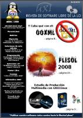

vol 2 nº 7 - 2008 diciembre
Descarga (PDF 4.0 MB español)

vol 2 nº 6 - 2008 noviembre
Descarga (PDF 3.3 MB español)

vol 1 completo - 2008 octubre
Descarga (PDF 3.9 MB español)

vol 2 nº 5 - 2008 septiembre
Descarga (PDF 3.2 MB español)

vol 2 nº 4 - 2008 julio
Descarga (PDF 2.8 MB español)

vol 2 nº 3 - 2008 mayo
Descarga (PDF 2.0 MB español)
vol 2 nº 2 - 2008 abril
Descarga (PDF 3.8 MB español)

vol 2 nº 1 - 2008 marzo
Descarga (PDF 3.8 MB español)

vol 1 nº 10 - 2008 febrero
Descarga (PDF 2.2 MB español)

vol 1 nº 9 - 2008 enero
Descarga (PDF 2.9 MB español)